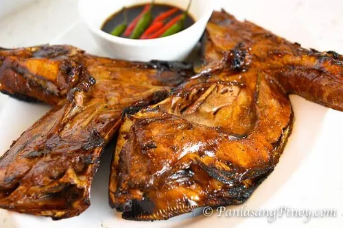
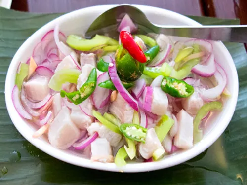
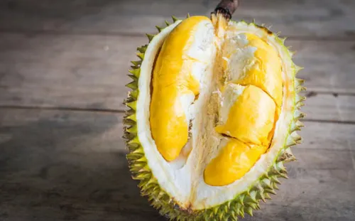
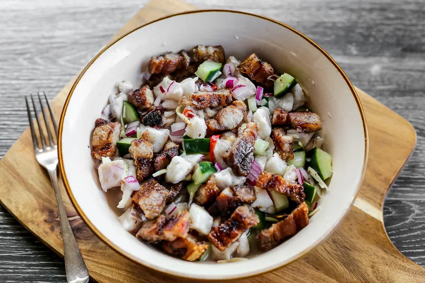

Davao’s Culinary and Agricultural Legacy: A Food Lover’s Guide
Davao City and its surrounding provinces are home to some of the best culinary and agricultural treasures in the Philippines. From its world-famous durian to its abundant seafood, tropical fruits, and rich cultural heritage, the region offers a diverse and flavorful dining experience. In this guide, we’ll explore what Davao is known for, its best dishes, and how it has become a food and agricultural powerhouse in the country.

Grilled Tuna Panga
This delicacy features the substantial jaw of a tuna, a prized cut known for its rich, meaty texture. It is meticulously marinated to enhance its natural flavors before being expertly grilled to a perfect char. Typically served with a dipping sauce of soy sauce and calamansi (Philippine lime), the combination of the savory, smoky tuna and the zesty, tangy sauce creates a delightful culinary experience.

Kinilaw
A quintessential Filipino dish, Kinilaw is a fresh, raw fish preparation that is akin to ceviche. The star ingredient, usually a firm white fish, is "cooked" and flavored by marinating it in a potent mixture of vinegar, calamansi juice, finely chopped onions, and a touch of chili for a subtle heat. The result is a bright, tangy, and refreshing dish that highlights the freshness of the seafood.

Durian Desserts
Durian, famously known as the "King of Fruits" in Southeast Asia, takes center stage in a variety of decadent desserts in Davao. These treats range from creamy durian ice cream, offering a unique sweet and savory profile, to chewy durian candies and rich durian pastries. These desserts capture the distinct, pungent aroma and complex flavor of the durian, making them a must-try for adventurous foodies.

Sinuglaw
This dish is a masterful fusion of two popular Filipino cooking styles: grilling and marinating. Sinuglaw combines succulent pieces of grilled pork with fresh, kinilaw-style marinated fish. The interplay of the smoky, charred flavor from the grilled pork and the tangy, zesty notes from the kinilaw creates a harmonious balance of tastes and textures, offering a truly unique and satisfying culinary adventure.
Reference: davaodelnorte-foods-in-DavNor